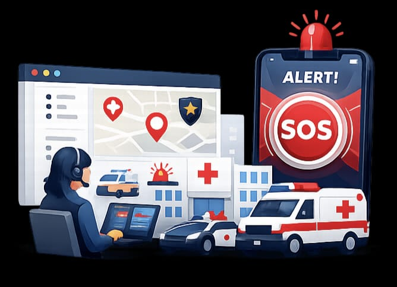

Silent SOS helps people quickly access emergency services, safety resources and incident reporting through one modern emergency platform.

Protected Users
Emergency Alerts
Emergency Centers
Platform Availability
Silent SOS provides modern emergency tools that help users stay connected with emergency services during critical situations.
Send an emergency request instantly with a single click.
Find hospitals, police stations and fire stations quickly.
Report emergencies through an easy-to-use reporting form.
Learn emergency procedures with professional safety guides.